판정은 네 가지로 나옵니다
| 판정 | 뜻 |
|---|---|
| 가능 | 업무 관련 지출이라 경비로 인정합니다. |
| 불가 | 법이 막는 지출이라 경비에서 뺍니다. 근거 조문이 붙습니다. |
| 확인 필요 | 사실을 알아야 판단할 수 있어 질문으로 넘깁니다. |
| 답변 대기 | 개인 지출로 보여 일단 뺐지만, 업무였다고 답하면 다시 판정합니다. |
사진 속 빨간 번호는 사진 아래 설명의 번호와 같습니다. 사진을 누르면 크게 열립니다. 사진 속 거래와 금액은 예시이고, 직접 넣으신 값과 고르신 답에 따라 달라집니다.
회원가입 · 로그인
주소로 들어가면 짧은 소개 화면이 나온 뒤 메인페이지가 열립니다. 소개는 오른쪽 위 「건너뛰기」로 넘길 수 있습니다.
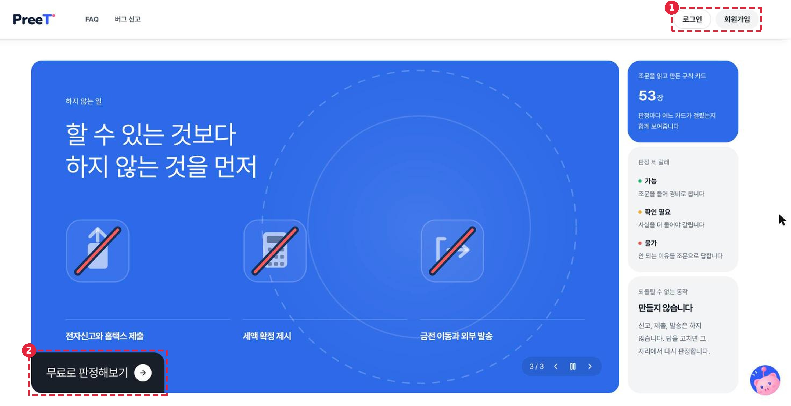
- 오른쪽 위에 로그인 · 회원가입이 있습니다.
- 「무료로 판정해보기」를 눌러도 회원가입 화면으로 갑니다.
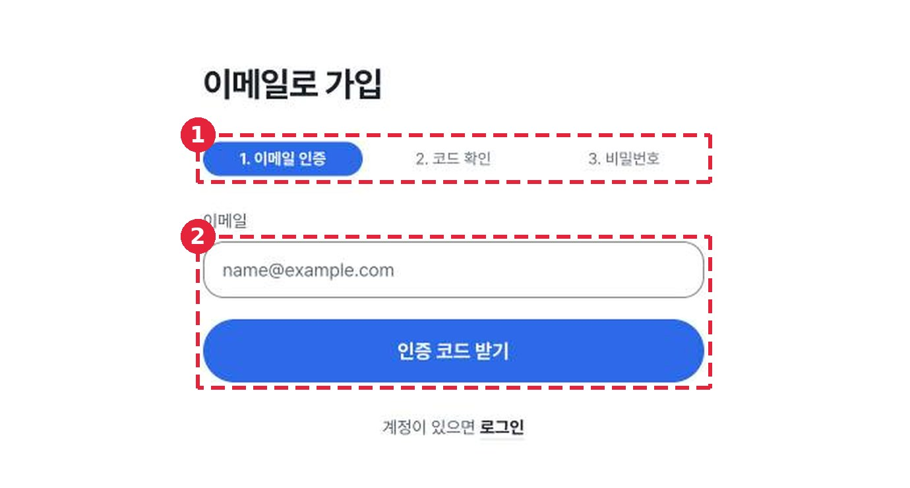
- 카카오로 시작하기를 누르면 가입과 로그인이 한 번에 됩니다. 가장 빠른 방법입니다.
- 이메일로 가입하려면 이메일 인증 → 코드 확인 → 비밀번호 순서로 진행합니다.
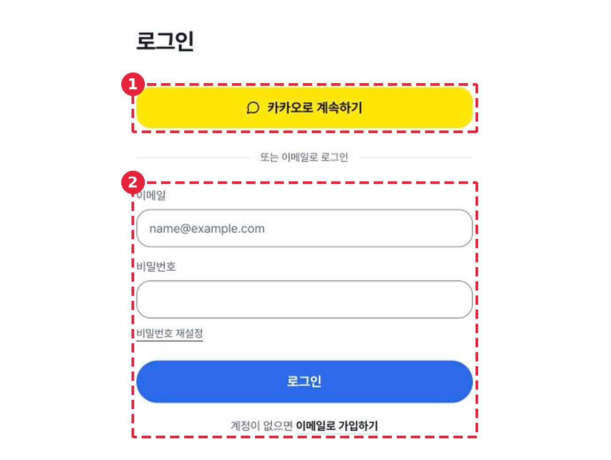
- 로그인 화면에서도 카카오로 바로 들어갈 수 있습니다.
- 이메일로 가입했다면 이메일과 비밀번호로 로그인합니다. 로그인하면 사업자 문진 화면이 바로 나옵니다.
사업자 문진
프리랜서 본인이라고 생각하고 상황에 맞게 넣은 뒤 「저장」을 누릅니다. 여기서 넣은 값이 뒤 단계의 금액에 그대로 반영됩니다.
무엇을 넣을지 망설여지시면 아래 예시를 그대로 쓰셔도 됩니다.
| 항목 | 예시 |
|---|---|
| 업종 | 프리랜서, 인적용역 (미리 골라져 있음) |
| 직전연도 수입금액을 알고 있나요? | 예 |
| 직전연도 수입금액 | 50,000,000원 → 기장의무 간편장부 |
| 개업일 | 2024. 03. 01 (과거 날짜면 아무거나) |
| 직원 | 없음 (1인) (미리 골라져 있음) |
| 자택에서 작업하나요? | 예, 작업 공간 비율 20% |
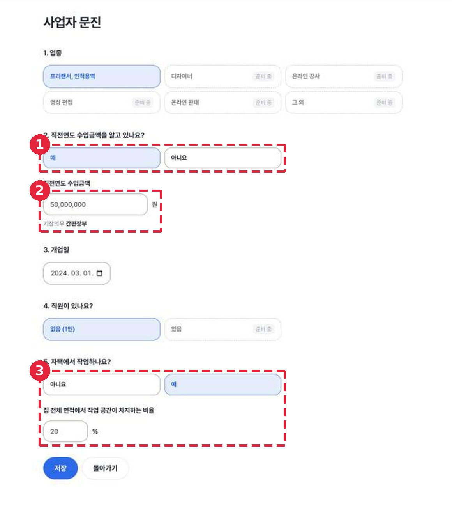
- 직전연도 수입금액을 알고 있는지 먼저 고릅니다. 모른다고 하면 기준을 보여 주고 기장의무를 직접 고르게 합니다.
- 금액을 넣으면 기장의무가 자동으로 정해집니다. 인적용역은 직전연도 수입 7,500만 원부터 복식부기 의무입니다. 수입금액은 접대비(기업업무추진비) 한도 계산에도 쓰입니다.
- 집에서 일한다면 자택 작업에 「예」를 고르고 작업 공간 비율을 넣습니다. 전기요금 같은 자택 겸용 지출을 이 비율만큼만 경비로 잡습니다.
카드내역 업로드
업로드 화면 아래 「샘플 파일로 해 보기」에서 KB국민카드 승인내역을 누릅니다. 따로 파일을 준비하지 않아도 됩니다.
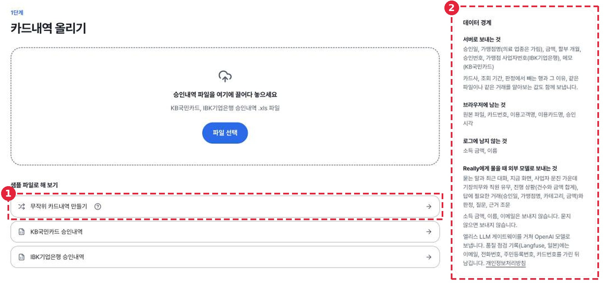
- 시연용 샘플이 KB국민카드 · IBK기업은행 두 가지 준비돼 있습니다. 실제로는 카드사에서 내려받은 승인내역 .xls를 고치지 않고 그대로 올립니다.
- 데이터 경계에 서버로 보내는 것과 브라우저에만 남는 것이 나뉘어 있습니다. 카드번호 · 이름은 브라우저 밖으로 나가지 않고, 의료 업종 가맹점명은 가려서 보냅니다.
샘플을 고르면 미리보기가 나옵니다.
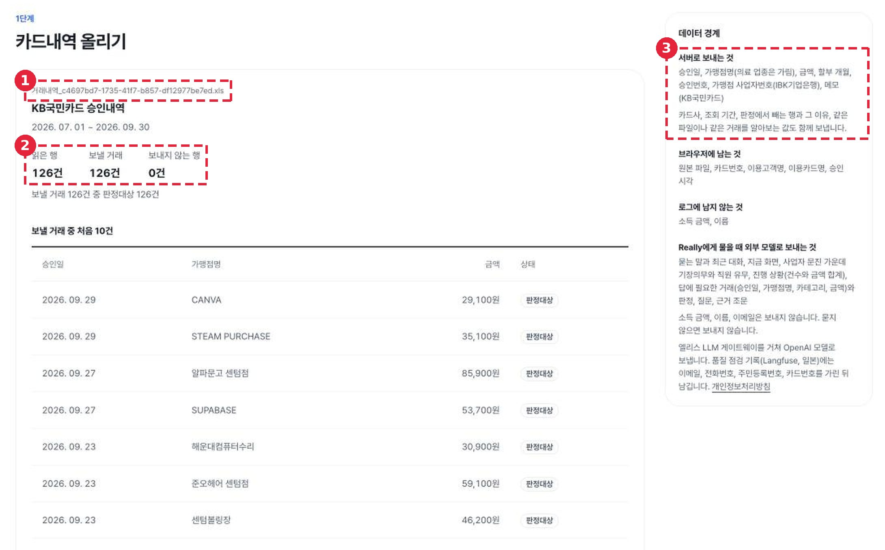
- 읽은 행 · 보낼 거래 · 보내지 않는 행 건수가 나옵니다. 0원 결제처럼 판정할 수 없는 행은 「보내지 않는 행」으로 이유와 함께 빠집니다.
- 결제와 그 취소가 함께 있으면 취소상계로 묶어 판정에서 뺍니다. 환불받은 돈이 경비로 잡히지 않습니다.
- 서버로 보내는 항목이 하나하나 적혀 있습니다.
「올리기」를 누릅니다.
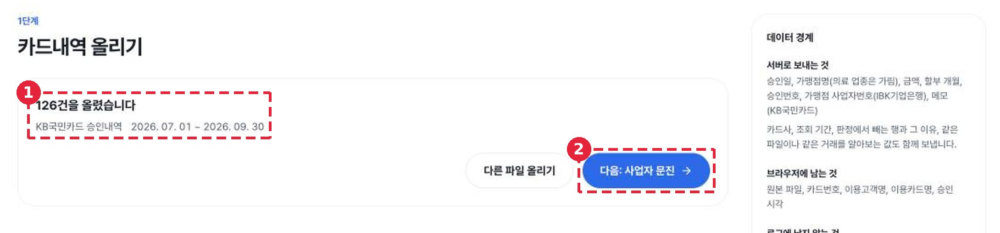
- 카테고리를 정하지 못한 가맹점이 있으면 몇 건인지 알려 줍니다.
- 「다음: 분류 확인」으로 넘어갑니다.
같은 샘플을 한 번 더 올려 보시면:
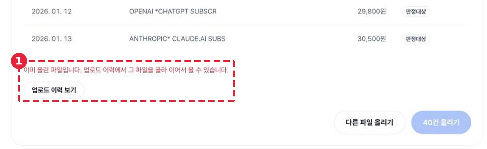
- 「이미 올린 파일입니다」로 막히고 올리기 버튼이 꺼집니다. 같은 파일을 여러 번 올려도 경비가 부풀려지지 않습니다.
분류 확인
처음 보는 가맹점은 판정 전에 어떤 지출인지 한 번 묻습니다.
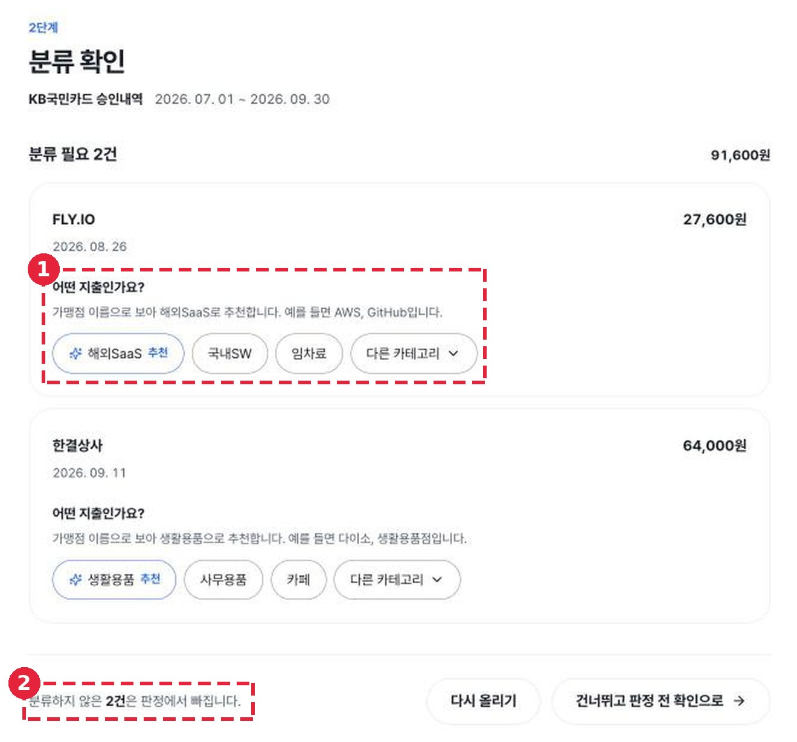
- 가맹점 이름을 보고 카테고리를 추천하고, 왜 그렇게 봤는지 예시와 함께 보여 줍니다. 추천을 누르거나 다른 카테고리를 고릅니다.
- 분류하지 않고 넘어가면 그 거래는 판정에서 빠진다고 미리 알려 줍니다.
판정 전 확인 · 판정 실행
분류를 마치면 「다음: 판정 전 확인」을 누릅니다.
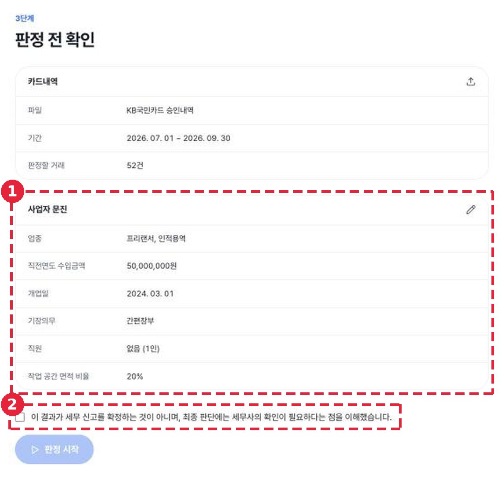
- 2단계에서 넣은 문진 값이 그대로 보입니다. 틀렸으면 오른쪽 위 연필 아이콘으로 고칩니다.
- 안내에 체크해야 「판정 시작」이 켜집니다. 결과는 신고를 확정하지 않고, 최종 판단은 세무사가 한다는 점을 먼저 알립니다.
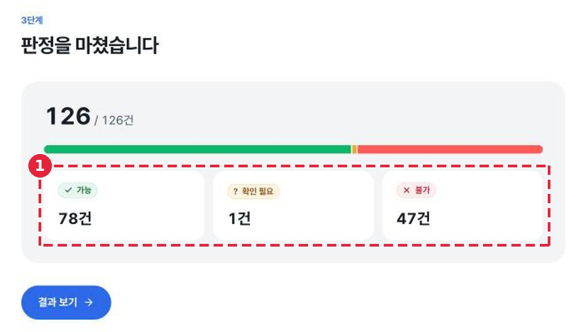
- 판정이 끝나면 거래가 가능 · 확인 필요 · 불가 · 답변 대기로 나뉘어 건수가 나옵니다.
결과 확인
「결과 보기」를 누릅니다. 표에서 거래를 누르면 오른쪽에 판정 이유, 근거 조문, 경비 가능 금액이 나옵니다.
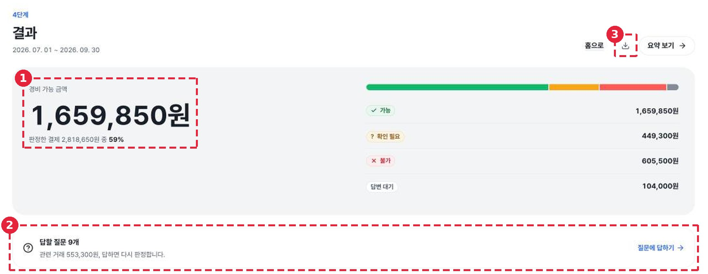
- 지금까지 경비로 인정된 금액이 맨 위에 나옵니다.
- 답할 질문이 따로 모여 있고, 질문이 걸린 금액도 함께 나옵니다.
- 다운로드 아이콘으로 결과를 CSV 파일로 받을 수 있습니다.
「가능」으로 나온 거래를 하나 눌러 봅니다.
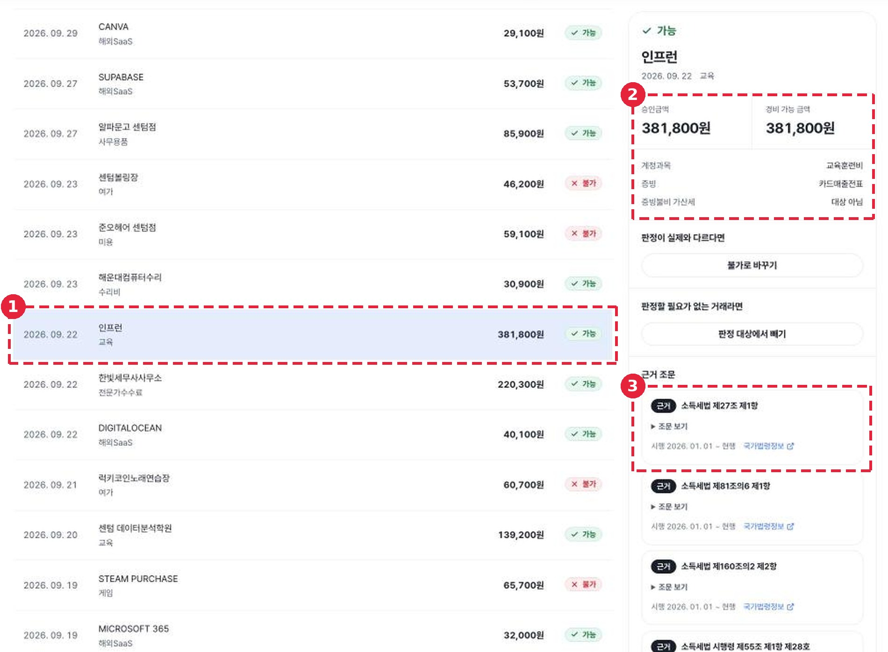
- 업무 관련이 분명한 거래는 묻지 않고 바로 가능으로 인정합니다.
- 경비 가능 금액과 함께 계정과목까지 정해집니다.
- 근거 조문이 시행 기간, 국가법령정보 원문 링크와 함께 붙습니다.
「불가」, 「확인 필요」, 「답변 대기」 거래도 눌러 봅니다.
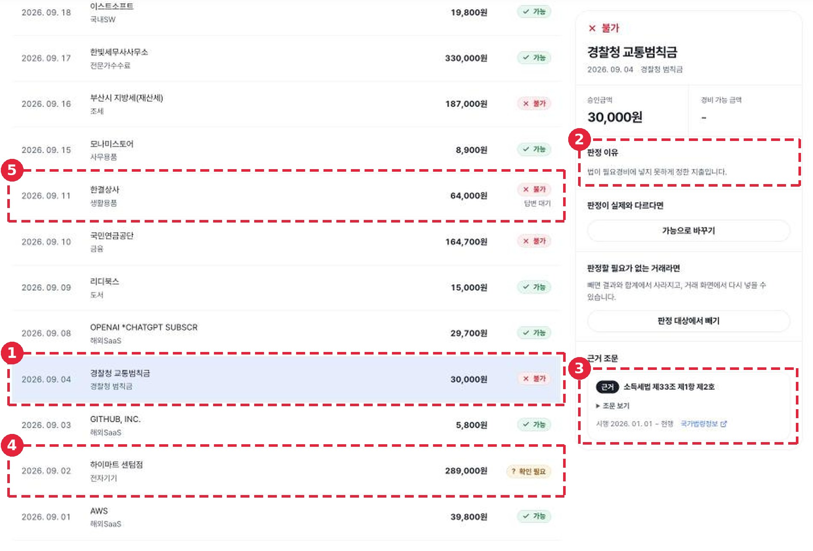
- 범칙금 · 세금처럼 법이 막는 지출은 불가입니다.
- 왜 뺐는지 판정 이유가 한 문장으로 붙습니다.
- 불가에도 근거 조문이 붙어, 사용자가 세무사에게 근거를 그대로 보여줄 수 있습니다.
- 전자기기 · 구독처럼 사실을 알아야 하는 거래는 확인 필요입니다. AI가 추측하지 않고, 사용자에게 사실을 확인받은 뒤 규칙이 판정합니다.
- 생활용품이나 주말 · 공휴일 식사처럼 개인 지출로 보이는 거래는 답변 대기입니다. 먼저 빼되, 업무였다면 살릴 길을 남깁니다.
질문에 답하기
결과 화면의 「질문에 답하기」를 누릅니다. 실제 상황이라고 생각하고 자유롭게 답해 보세요. 답하면 그 자리에서 다시 판정됩니다.
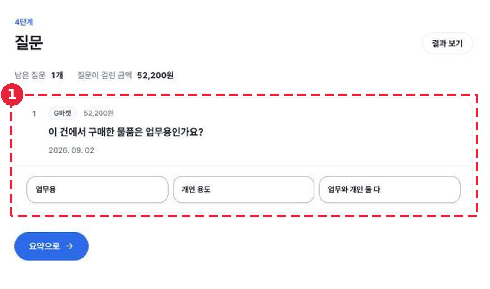
- 질문은 거래마다 붙고, 금액이 큰 순서로 나옵니다.
질문 몇 개에 답해 봅니다. 아래는 답이 금액에 어떻게 반영되는지 보여주는 예시입니다.
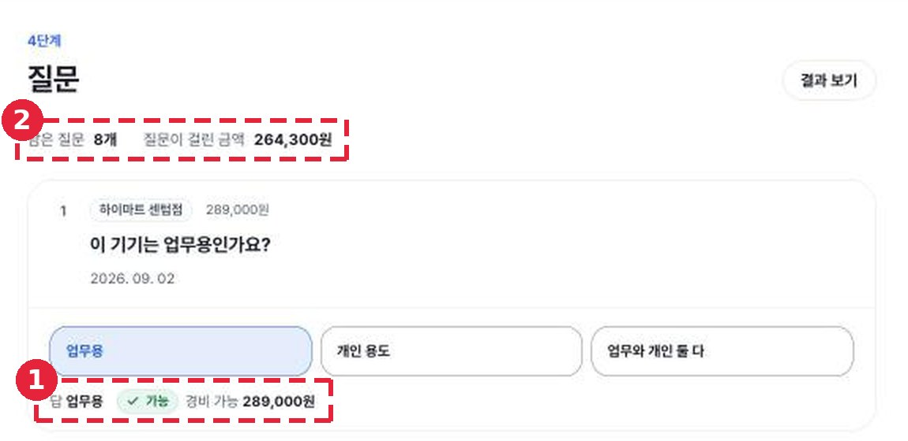
- 답을 고르자마자 판정과 경비 가능 금액이 카드 안에 바로 나옵니다.
- 남은 질문 수와 질문이 걸린 금액도 함께 줄어듭니다.
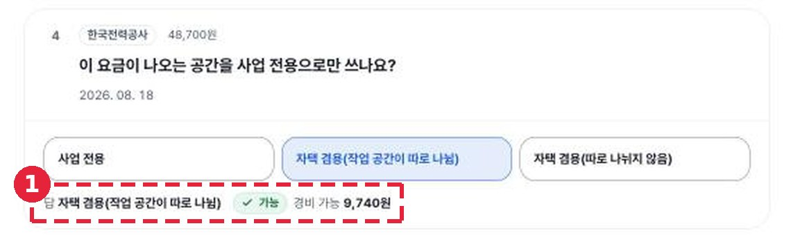
- 전기요금 같은 공과금을 「자택 겸용」으로 답하면, 문진에서 넣은 작업 공간 비율만큼만 경비로 나옵니다. 「사업 전용」이면 전액입니다.
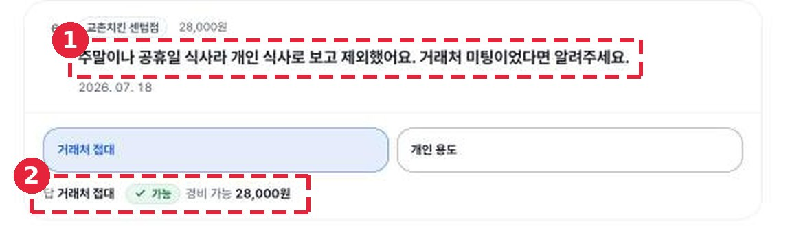
- 답변 대기 거래의 질문은 왜 뺐는지부터 설명합니다.
- 「거래처 접대」로 답하면 가능으로 바뀌고 계정과목이 기업업무추진비로 잡힙니다. 「개인 용도」로 답하면 불가로 확정됩니다.
파일을 하나 더 올려 보시면, 같은 가맹점 질문에는 지난번 답을 다시 쓸 수 있습니다.
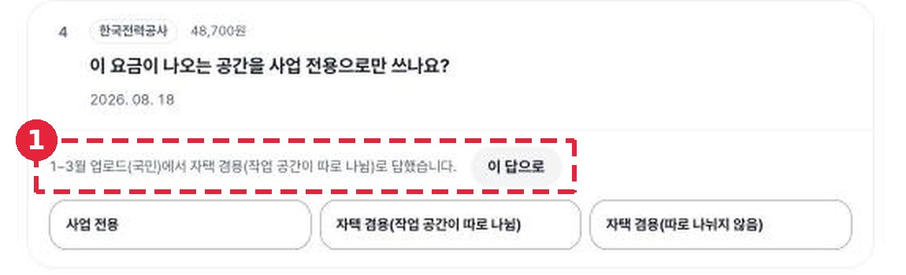
- 어느 업로드에서 뭐라고 답했는지 보여 주고, 「이 답으로」 한 번에 적용합니다.
몇 개 답한 뒤 「결과 보기」로 돌아갑니다.
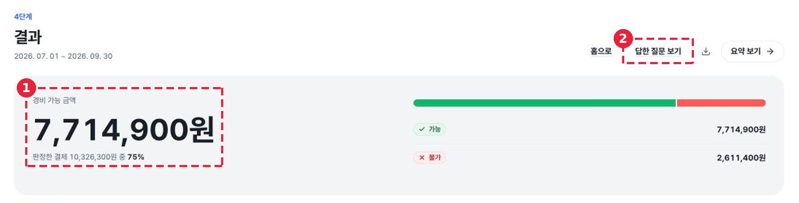
- 맨 위 경비 가능 금액이 답한 내용만큼 바뀌어 있습니다.
판정 직접 수정
자동 판정이 내 상황과 다르다고 느낀 거래를 하나 골라, 상세의 「가능으로 바꾸기」나 「불가로 바꾸기」를 누릅니다.
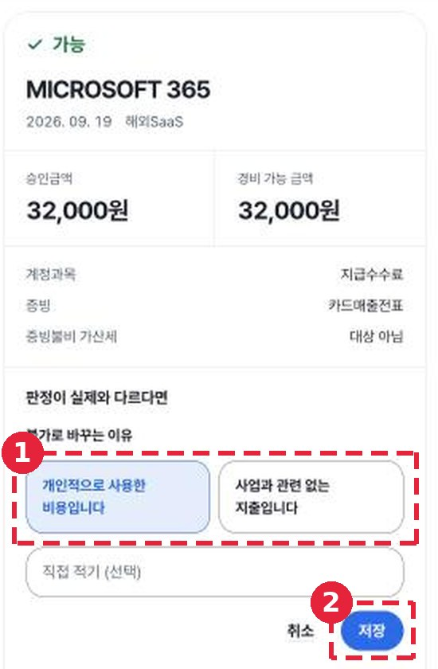
- 바꾸는 이유를 고릅니다. 직접 적을 수도 있습니다.
- 이유를 골라야 「저장」이 켜집니다.
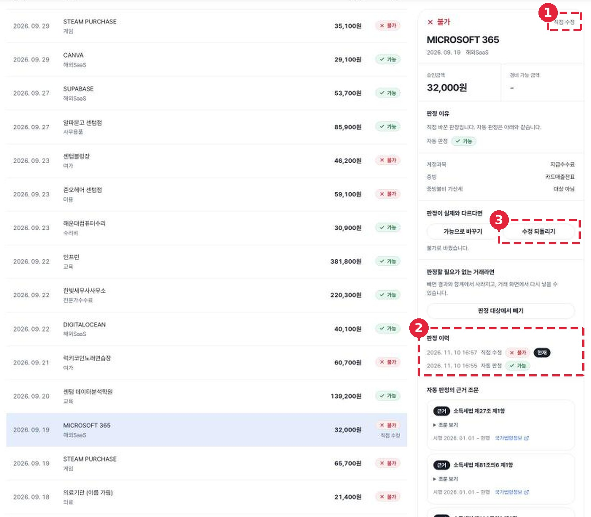
- 직접 수정 표시가 붙습니다.
- 판정 이력에 자동 판정과 직접 수정이 함께 남습니다. 최종 판단은 사람이 하되, 자동 판정과 구분해 남깁니다.
- 「수정 되돌리기」로 원래 판정으로 돌릴 수 있습니다.
요약
결과 화면 오른쪽 위 「요약 보기」를 누릅니다.
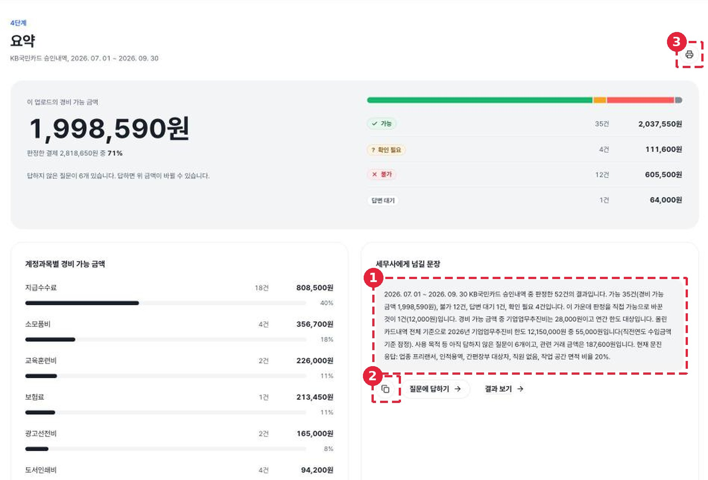
- 세무사에게 넘길 문장에 지금까지의 결과와 기업업무추진비 한도가 정리됩니다. 한도는 1,200만 원 + 문진에 넣은 수입금액 × 0.3%입니다. 중소기업 특례 3,600만 원은 940909 면세 인적용역사업자에 적용되지 않습니다. (사전-2025-법규소득-0245)
- 복사 아이콘으로 이 문장을 그대로 세무사에게 보낼 수 있습니다.
- 인쇄 아이콘으로 요약을 PDF로 저장할 수 있습니다.